Экономическая теория физиократов
Это экономическая школа, возникшая во Франции в середине XVIII в. Слово «физиократия» имеет греческое происхождение и в переводе означает «власть природы», в этом смысле представители физиократизма исходили из определяющей роли в экономике земли и сельскохозяйственного производства.
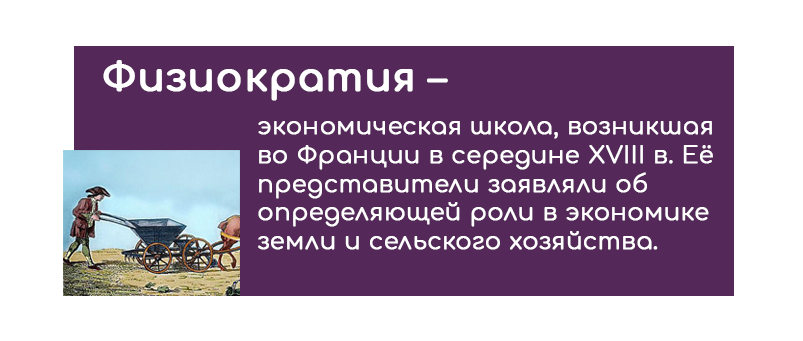
Физиократы внесли существенный вклад в наполнение философии либерализма экономическим содержанием. Они были сторонниками неограниченной конкуренции и невмешательства государства в экономику. Основным принципом их системы была вера в естественный порядок. Она была основана на учении о естественном праве, которое было призвано обеспечить получение преимуществ от возможности действовать в своих собственных интересах. Исследуя проблему национального богатства, они обосновали понятие «чистого продукта», определив его как приращение материального богатства, созданное трудом совместно с землей, «чистый продукт» – это разница между суммой всех благ и затратами на их производство. Наиболее известными представителями школы физиократов были Франсуа Кенэ (доктор, личный врач маркизы и один из медиков короля) (1694-1774) и Анн Робер Жак Тюрго (министр финансов Франции при Людовике XVI) (1727-1781).
Физиократы внесли значительный вклад в развитие научного экономического знания, обосновав первую модель макроэкономического оборота, изложенную в известном сочинении Кенэ «Экономическая таблица». Она представляет собой схему обмена между тремя классами общества:
- Класса производительного (все люди, занятые в сельском хозяйстве, включая крестьян и фермеров);
- Класса собственников (землевладельцы, включая короля и духовенство);
- Класса бесплодных (все граждане вне земледелия, т.е. в промышленности, торговле и др. отраслях сферы услуг).
Анн Роберт Жак Тюрго (1727-1781) – главный труд «Размышления о создании и распределении богатств» (1770 г.). Вслед за Кенэ он отстаивал принцип свободной экономической деятельности и разделял его взгляд на земледелие, как единственный источник прибавочного продукта.
Тюрго впервые сформировал закон убывающего плодородия почвы: каждое дополнительное вложение капитала и труда в землю дает меньший по сравнению с предыдущим вложениями эффект, а после некоего предела всякий дополнительный эффект становится невозможным.
Классическая политическая экономия
Основные этапы развития классической школы:
- Первый этап (конец XVII – середина, начало второй половины XVIII века): У. Пети (Англия), П. Буагильбер (Франция).
- Второй этап (середина XVIII – конец XVIII века): А. Смит.
- Третий этап (первая половина XIX века): называвшие себя учениками и последователями А. Смита англичане Д. Рикардо, Т. Мальтус, француз Ж.Б. Сей.
1 этап: Основоположник классической политической экономии в Англии – Уильям Петти (1623-1687). Наиболее важными его работами являются: «Трактат о налогах и сборах» (1662 г.), «Политическая экономия Ирландии» (1672 г.), «Политическая арифметика» (1676 г.), «Разное о деньгах» (1682 г.).
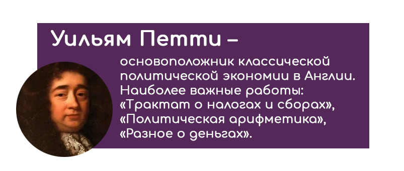
У. Петти различал естественные и рыночные цены, меняющиеся в зависимости от соотношения спроса и предложения.
У. Петти рассмотрел, какие факторы участвуют в производстве продукции, создании богатства. Он выделял четыре фактора. Первые два – земля и труд – основные. Два других фактора, участвующих в создании продукта, не основные. Это – квалификация, искусство работника и средства его труда – орудия, запасы и материалы.
У. Петти рассматривал другие экономические категории. Рента трактуется им как стоимость сельхозпродуктов за вычетом издержек производства, то есть излишек стоимости над издержками производства. Характеризуя заработную плату, У. Петти установил её зависимость от стоимости средств существования рабочего. Ссудный процент У.Петти считает платой за неудобства, причиняемые кредитору при предоставлении денег в долг на определенный срок. У. Петти говорил о существовании пропорции денег для торгового обмена: избыток денег ведет к росту цен, а недостаток – к сокращению объемов производимых работ и низкому уровню налоговых платежей. У. Петти создал экономическую статистику (политическую арифметику) и предложил метод исчисления национального дохода.
Зарождение классической политэкономии во Франции связано с именем Пьера Ленезана де Буагильбера (1646-1714) и отражено в его исследованиях «Подробное описание Франции» (1697), «Розничная торговля Франции», «Трактат о природе возделывания, торговле и пользе земли», «Рассуждение о природе богатства, денег и налогов» (1707).
П. Буагильбер выступил с критикой меркантилизма, стремясь улучшить положение крестьян, считал, что правительство должно осуществлять ряд покровительственных мер по отношению к крестьянству. Он считал источником богатства не обмен, а производство. Обмен – это лишь условие развитие производства. Независимо от У. Петти, он положил начало теории трудовой стоимости.
П. Буагильбер защищал развитие сельского хозяйства. Он считал, что сельскохозяйственное производство имеет целый ряд преимуществ по сравнению с промышленностью, и что нельзя развивать промышленность за счет аграрного сектора. П. Буагильбер выступал с резкой критикой политики меркантилизма, которую осуществлял французский министр финансов Кольбер (1619-1683), обременявшей сельскохозяйственное население непомерными налогами.
2 этап: Адам Смит (1723-1790) - «Исследование о природе и причинах богатства народов» (вышла в свет в 1776 г.).
Методология исследования А. Смита
- Модель «экономического человека». «Экономический человек» принимает решения по поводу производства и потребления благ, исходя исключительно из рациональных экономических факторов и независимо от религиозных, психологических, политических, нравственных и других неэкономических мотивов. Каждый индивид при осуществлении своих действий руководствуется личными, эгоистическими интересами и стремится к максимальной выгоде для себя».
- Концепция «невидимой руки». Согласно этой концепции поведение отдельных людей, каждый из которых ведет себя как разумный эгоист, в конечном счете приводит к максимально возможному общественному благосостоянию. Преследовать свой корыстный интерес человек может, только оказывая услуги другим людям, предлагая в обмен свой труд и продукты труда. В результате люди помогают друг другу и одновременно способствуют развитию общества, хотя каждый из них – эгоист и печется только о своих интересах.
- Теория «естественного порядка». В своем учении А. Смит опирался на теорию «естественного права», которая признавала объективный характер экономических законов, рассматривала их в качестве основы государственных законов, тождественным законам человеческой природы. Экономические законы действуют помимо воли людей и часто против их воли. Введя в такой форме в науку понятие об экономическом законе, Смит сделал важный шаг вперед. Этим он, по существу, поставил политическую экономию на научную основу. Условия, при которых наиболее эффективно осуществляется благотворное действие своекорыстного интереса и стихийных законов экономического развития, Смит называл естественным порядком.
Сочинение Смита состоит из пяти частей (у него они названы «книга-ми»):
- Разделение труда, стоимость и прибавочная стоимость;
- Капитал и доходы;
- Денежное обращение;
- Характеристика меркантилизма и физиократии (систем политэкономии);
- Финансы государства: расходы и доходы.
3 этап: Учение Д. Рикардо (1772-1823) Д. Рикардо – экономист эпохи промышленного переворота. Основная работа Д. Рикардо «Начала политической экономии и налогового обложения» (1817).Главную задачу политической экономии видел в определении законов, управляющих распределением продукта (доходов) между классами.
Он выделил три основные социальные группы: землевладельцы, капиталисты-предприниматели и рабочие и охарактеризовал их участие в накоплении капитала, необходимого для экономического роста. Капиталисты являются получателями прибыли, большую часть которой они накапливают и направляют на расширение производства. Рабочие своим трудом создают ценности, но они не могут принимать участия в накоплении капитала, так как получают заработную плату, ограниченную прожиточным минимумом. Землевладельцы, ведущие праздный образ жизни, получают ренту, которую полностью тратят на личное потребление и, следовательно, не принимают никакого участия в процессе увеличения национального богатства.
Теория заработной платы, прибыли и земельной ренты. Зарплата. Труд есть товар, стоимость которого определяется точно так же, как и любого другого товара.
Прибыль. Во-первых, как и А.Смит, Д. Рикардо полагает, что прибыль – это избыток стоимости товара над заработной платой, она обратно пропорциональна заработной плате; а, во-вторых, он утверждает, что стремление капиталистов искать своему капиталу наиболее выгодное применение, оставляя ради этого менее прибыльные направления использования, создает сильную тенденцию к тому, чтобы либо приводить прибыль всех к единой норме, либо устанавливать между ними такую пропорцию.
Рента. Рента – это та часть продукта земли, которая уплачивается землевладельцу за пользование первоначальными и неразрушимыми силами почвы.
Теория внешней торговли. Д. Рикардо был сторонником политики фритредерства. Говоря о внешней торговле, он обращал внимание на то, что она полезна для страны тем, что увеличивает массу и разнообразие предметов, на которые может расходоваться доход, и создает благодаря обилию и дешевизне товаров пробуждение к сбережению и накоплению капитала. Д. Рикардо является одним из авторов идеи, обосновывающей выгодность международного разделения труда и специализации стран на производстве отдельных товаров. Он показал, что специализация выгодна не только в тех очевидных случаях, когда она диктуется природными и климатическими условиями.
Разработка теории сравнительно преимущества в международной торговле была научным достижением Д. Рикардо.
Экономическая мысль начала XIX в. (Ж.Б. Сэй, Т. Мальтус). Учение Ж.Б. Сэя. Жан Батист Сэй особенно акцентировал необходимость экономического либерализма, т.е. невмешательства государства в экономику. Основная работа Ж.Б. Сэя «Трактат политической экономии, или простое изложение способа, которым образуются, распределяются и потребляются богатства» (1803).
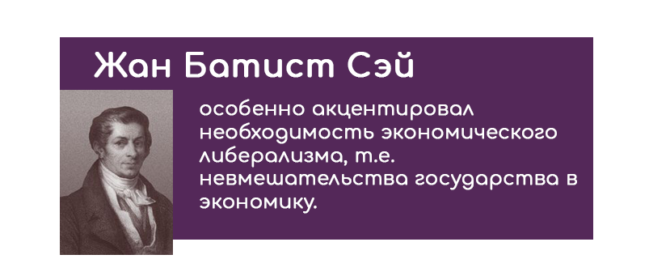
Теория стоимости. Ж. Б. Сэй стал разрабатывать традицию трактовки стоимости, заложенную А. Смитом – теорию факторов производства. Ж. Б. Сэй первым из классиков четко и однозначно сформулировал идею о том, что стоимость товара равна сумме заработной платы, прибыли и ренты, т.е. сумме доходов владельцев производственных факторов, используемых при изготовлении данного товара.
Теория рынков сбыта. В рамках своей теории рынков сбыта Ж.Б. Сэй сформулировал закон, названный впоследствии его именем. Согласно теории рынков сбыта Ж.Б. Сэя, «сбыт для продуктов создается самим производством», т.е. предложение продукции порождает спрос. Это и есть две равнозначные формулировки закона Сэя.
Закон Сэя, в свою очередь, приводит к следующим следствиям:
- Общее перепроизводство невозможно;
- То, что выгодно для отдельного хозяйствующего субъекта, выгодно для экономики в целом;
- Импорт выгоден для экономики, поскольку оплачивается ее продуктами;
- Те силы общества, которые потребляют, но не производят, разоряют экономику.
Теория рынков сбыта Ж.Б. Сэя приводила к мысли о внутренней стабильности и устойчивости рыночной экономики. Безработицу и спады производства следовало – на ее основе – трактовать как временные феномены, не имеющие долгосрочного значения.
Учение Т. Мальтуса. Томас Роберт Мальтус (1766-1834) видный представитель экономической мысли в Англии. В 1798 году Т.Мальтус опубликовал книгу «Опыт о законе народонаселения». Основной идеей книги явилась теория народонаселения.

Теория народонаселения По аналогии с природой, где, по словам Т. Мальтуса, способность рас-тений и животных к безграничному размножению сдерживается недостатком места и пищи, Мальтус открыл различные тенденции роста народонаселения и средств существования. Если население удваивается каждые 25 лет, возрас-тает в геометрической прогрессии, то средства существования, по его утвер-ждению, растут в арифметической прогрессии. В результате, людей больше, чем может прокормить земля: в этом суть его закона народонаселения.
Излишек населения обречен на нищету, голод и вымирание. Поэтому, по мнению Т. Мальтуса, причина бедности зависит не от общества, а от естественных законов, человеческих страстей. Народ должен винить себя, а не богатых. Численность населения сокращается войнами, голодом, возде-ржанием от брака неимущих. Выполняет определенную функцию в этом деле и изнурительный труд, эпидемии и т.п. В частности, эмиграция. Главное затормозить рост населения.
Марксизм
Карл Маркс (1818-1883 гг.) родился в Германии (в те времена – Пруссия), в г. Трире в семье адвоката, закончил юридический факультет Берлинского университета, имел ученую степень доктора философских наук. С 1850 г. К.Маркс проживал в Лондоне, где и написал свой основной труд «Капитал».
Согласно К.Марксу, общество – это саморазвивающаяся система, динамика которого определяется состоянием и развитием «способа производства».
Способ производства – это сочетание имеющихся в настоящий момент количества и качества труда и средств производства («производительных сил») и «производственных отношений» (рабовладельца и раба, капиталиста и наемного рабочего, и т.д.).
Существует три типа способов производства или общественно-экономических формаций, последовательно сменяющих друг друга: докапиталистический строй (включающий такие разновидности, как первобытное общество, восточный и античный типы рабовладельческого общества, феодализм), капиталистический строй и послекапиталистический строй.
Кроме того, следует также отметить, что К. Маркс последовательно придерживался принципа методологического коллективизма, а конкретнее, «исповедовал» «классовый подход»: отдельные хозяйствующие субъекты не имеют собственных целей и предпочтений; их действия определяются классовой принадлежностью. К. Маркса интересовали аспекты динамического взаимодействия между распределением дохода, накоплением капитала и техническим прогрессом.
Теория товара и денег. Двойственный характер труда. Товар – продукт труда, предназначенный для обмена, купли-продажи, который удовлетворяет какие-либо человеческие потребности.
Каждый товар обладает, по К.Марксу, следующими свойствами:
- Во-первых, К.Маркс рассматривает товар как предмет, вещь, которая благодаря ее свойствам удовлетворяет какие-либо человеческие потребности. Поэтому каждый товар обладает потребительной стоимостью. Потребительская стоимость товара – это способность товара удовлетворять человеческие потребности.
- Во-вторых, каждый товар как продукт труда обладает стоимостью, благодаря которой товары становятся соизмеримыми. «Общим зна-менателем» для обмениваемых товаров является создавший их труд. Поэтому стоимость – это воплощенный в товаре человеческий труд, затраты человеческой рабочей силы безотносительно к конкретной форме труда. Способность товара обмениваться на другие товары в определенной количественной пропорции (обмениваемость) получила у Маркса название меновой стоимости товара.
Меновая стоимость (то есть пропорция обмена потребительных стоимостей) служит формой стоимости, ее внешним проявлением. Таким образом, товар выступает как неразрывное, хотя и противоречивое единство двух своих сторон – потребительной стоимости и стоимости.
Такая двойственность товара обусловлена двойственным характером труда товаропроизводителя.
Труд одновременно выступает в конкретной и абстрактной формах.
- Конкретный труд – труд, которым создается качественно определенная потребительная стоимость – хлеб, костюм, сапоги, велосипед и т.п
- Абстрактный труд – человеческий труд вообще как расходование человеческой рабочей силы вообще (энергии, мускулов, нервов, ума), независимо от конкретных результатов труда.
Товар, который обладает способностью непосредственно обмениваться на любой другой товар, получил название всеобщего эквивалента. С течением времени эта роль почти повсеместно закрепилась за серебром и золотом, что и привело к утверждению денежной формы стоимости.
Деньги – это законченная форма всеобщего эквивалента, представлен-ная благородными металлами – особым товаром, выполняющий роль всеобщего эквивалента, с потребительной стоимостью которого прочно срослась эквивалентная форма стоимости.
Теория экономического развития и технологической безработицы. Трудосберегающий технический прогресс постепенно вытесняет рабочую силу из общественного производства и увеличивает число безработных, «резервную армию труда», что, в свою очередь, порождает «обнищание пролетариата». Это обнищание все усиливает и усиливает «антагонизм между трудом и капиталом».
В то же время происходят процессы централизации капитала: он скапливается в руках все меньшего и меньшего количества капиталистов, разоряющих более слабых «собратьев» по классу. Когда все эти противоречия достигают пика, «бьет час капиталистической частной собственности. Экспроприаторов экспроприируют». Иными словами рабочий класс совершает пролетарскую революцию, которая кладет конец существованию «антагонистического» способа производства - капитализма.
Теория общественного воспроизводства (макроэкономическая модель). Своей теорией воспроизводства во II томе «Капитала» Маркс продолжил дело, начатое Экономической таблицей Ф. Кенэ, – моделирование кругооборота общественного продукта.
- Во-первых, Маркс исходит из предпосылки условий долгосрочного рыночного равновесия при неизменности технического уровня производства и потребительских предпочтений.
- Во-вторых, экономика в теории Маркса разделена на два сектора (подразделения):
- производство средств производства (I подразделение – Q1);
- производство предметов потребления (II подразделение – Q2).
- В-третьих, Маркс рассматривает закрытую экономику без внешней торговли и «чистый капитализм», то есть общество, состоящее только из двух классов: капиталистов и рабочих.
- В-четвертых, подразумевается, что рабочие целиком используют свой доход на потребление. Что касается способа расходования дохода капиталистов (прибавочной стоимости), то Маркс пользуется двумя гипотезами на этот счет и, соответственно, строит два варианта своих схем воспроизводств.
Схема простого воспроизводства моделирует повторяющийся кругооборот общественного продукта в неизменном масштабе – в этом случае предполагается, что чистые инвестиции отсутствуют, вся прибавочная стоимость идет на личное потребление капиталистов.
Схема расширенного воспроизводства, напротив, строится на предположения, что часть прибавочной стоимости сберегается от потребления и становится источником накопления капитала.
Основы теории экономических кризисов. Кризисы перепроизводства – одно из самых ярких свидетельств противоречивости капитализма – не могли не привлечь пристального внимания Маркса.
К. Маркс был первым в экономической науке, кто исследовал цикличность развития, выявил причины периодичности циклов, выделил четыре фазы цикла, последовательно сменяющие друг друга: кризис, депрессия, оживление и подъем.
Сопоставляя натуральный (бартерный) обмен с денежным, Маркс сразу же обращает внимание на то, что в этом случае между продажей и покупкой появляется разрыв во времени, и это создает возможность экономического кризиса.
Судьба капитализма. В текстах Маркса имеется два варианта развития событий, возможности существования капитализма в будущем.
Прибавочная стоимость аккумулируется классом капиталистов, т.е. на одном полюсе общества. В силу конкуренции капиталов одновременно растет степень их концентрации. Это ведет к обострению конфликта, который Маркс назвал основным противоречием капитализма – между общественным характером производства и частным характером присвоения его результатов.
Если в условиях конкурентного капитализма частные интересы ограничивались неподконтрольным для них рынком, то постепенно, по мере концентрации капиталов общественное производство перестает быть стихийным, и контроль над ним сосредотачивается в руках крупного частного капитала. Для Маркса такое положение было признаком того, что общественное производство технически и организационно созрело для общественного прогресса контроля и, следовательно, для смены экономической системы, т.е. для перехода к социализму.
Второй сценарий опирался на тенденции научно-технического прогресса. Еще в середине XIX в. Маркс обратил внимание на то, что за простым ростом фондовооруженности труда начинает просматриваться нечто большее, а именно тенденция к вытеснению непосредственного человеческого труда из процесса производства.
Историческая школа
В XIX в. классическая политическая экономия занимала господствующее положение в экономической мысли и составляла ортодоксию экономической науки. Однако возникали теории, которые критиковали ее основные положения, а также капиталистическую систему в целом. Находясь в оппозиции к ортодоксальной классической политической экономии, они составляли гетеродоксию экономической науки XIX в.
Периодизация исторической школы
- Предшественник Фридрих Лист (1789-1846) – «Национальная система политической экономии»;
- Старая историческая школа: Вильгельм Рошер (1817-1894) – «Программа лекций по историческому методу», Бруно Гильдебранд (1821-1878) – «Политическая экономия настоящего и будущего», Карл Книс (1821-1898) – «Политическая экономия с точки зрения исторического метода»;
- Новая (молодая) историческая школа : Густав Шмоллер (1838-1917) – «Основы общего учения о народном хозяйстве» («Народное хозяйство, наука о народном хозяйстве и её методы»»); Луйо Брентано (1848-1931) – «Об отношении заработной платы и рабочего времени производительности труда»; Карл Бюхер (1847-1930) – «Возникновение народного хозяйства»;
- Юная историческая школа : Вернер Зомбарт (1863-1941) – «Современный капитализм», Макс Вебер (1864-1920) – «Протестантская этика и дух капитализма».
Общая характеристика Отрицание возможности построения универсальной экономической теории, что проявлялось в критике классической политической экономии - особая и значительная роль для экономической науки исторического метода при отрицательном отношении к абстрактно-дедуктивным методам анализа.
Трактовка народного хозяйства как единого целого, части которого находятся в постоянном взаимодействии между собой, а не как простой суммы отдельных индивидов.
Трактовка хозяйства как одной из частей социальной жизни и, как следствие, учет влияния на национальное хозяйство не только экономических, но и природно-географических, национально-исторических, правовых и других неэкономических факторов. Понимание хозяйства как эволюционирующей системы, проходящий в своем развитии различные стадии.
Понимание хозяйства как эволюционирующей системы, проходящий в своем развитии различные стадии. Отрицательное отношение к концепции экономического человека.
Человек - это культурное существо, ориентированное на общественные ценности.
Благосклонное отношение к государственному вмешательству.
Без планомерного воздействия государства на хозяйство «сильнейшие» будут всегда оказываться в выигрыше за счет «слабейших».
Фридрих Лист Одним из первых высказал идею о том, что для каждой страны характерна своя национальная политическая экономия, поскольку экономика отдельных стран развивается по собственным законам.
Учение о производительных силах. Задачу национальной политической экономии, по мнению Ф. Листа, заключается в определении наиболее благоприятных условиях для развития производственных сил нации. Национальные производительные силы – это совокупность общественных условий, которые определяют предпосылки создания богатство нации. Ф. Лист дал широкое толкование этого термина, включив в производительные силы различные институты, способствующие экономическому развитию – от христианства и единоженства до почты и полиции безопасности.
Учение о стадиях развития хозяйства Степень развитости производительных сил, в свою очередь, является критерием разграничения стадий хозяйственной эволюции. в зависимости от способности создавать богатство, в прогрессивной эволюции национального хозяйства можно выделить следующие стадии развития:
- Стадия дикости;
- Стадия пастушества;
- Земледельческая стадия;
- Земледельческо-мануфактурная стадия;
- Земледельческо-мануфактурно-торговая стадия
Чем на более поздней стадии находится хозяйство, тем более оно развито.
Старая историческая школа. Некоторые идеи Ф. Листа получили дальнейшее развитие у представителей так называемой «старой исторической школы» (1840-1850-е гг.). Их подход отличает крайне резкое неприятие классической политической экономии и полное отрицание наличия объективных экономических законов.
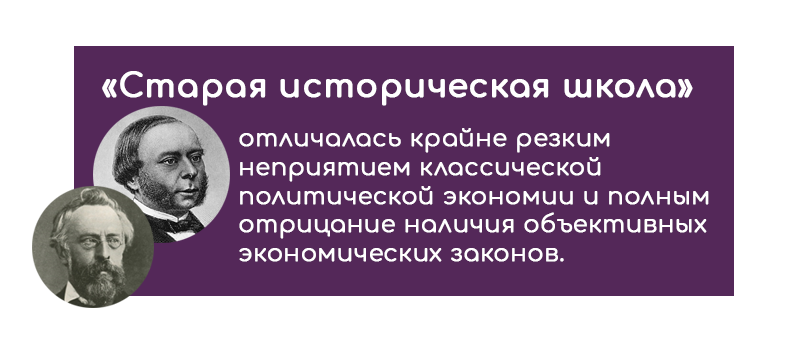
Вильгельм Рошер выделил в истории три больших периода:
- Древнейший, когда главный фактор производства – земля;
- Средневековый, когда значительным становится труд благодаря корпоративно-цеховой исключительности;
- Новый, когда господствует капитал и благодаря ему происходит возвышение ценности земли, вытеснение ручного труда машинным и обострение противоположности роскоши и нищеты.
Бруно Гильдебранд , как и Ф. Лист, придавал большое значение периодизации стадий хозяйственного развития. Но у него критерием разграничения стадий является развитость сферы обращения. На основании этого критерия им выделяются три стадии.
- Натуральное хозяйство. Обмен либо вообще отсутствует, либо принимает формы бартера.
- Денежное хозяйство. На этой стадии развития деньги становятся необходимым посредником при совершении обменных операций.
- Кредитное хозяйство. А здесь прекращается использование денег при обмене, и их место занимает кредит. Эта стадия хозяйственного развития является высшей, поскольку в нем открываются максимальные возможности предпринимательства для «активных» людей: даже не имея своего капитала, человек может стать предпринимателем, взяв необходимые средства в кредит.
Карл Книс отрицал возможность создания экономической науки как таковой. Ведь наука может существовать только там, где есть некая повторяемость изучаемых явлений. Но каждая нация имеет свой неповторимый, уникальный путь развития хозяйства, поэтому повторяемость невозможна. Экономические явления по своей сути не доступны познанию. Экономисты могут лишь наблюдать их и давать им моральную оценку.
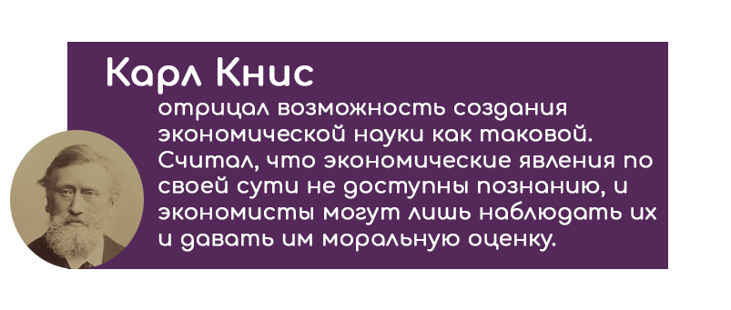
Новая историческая школа. В конце 1850-х годов немецкая историческая школа пришла в упадок, в 1870-е годы началось ее возрождение (продолжавшееся до начала XX века). Их отличала меньшая радикальность по отношению к «универсальности» и «объективности» в экономической науке.
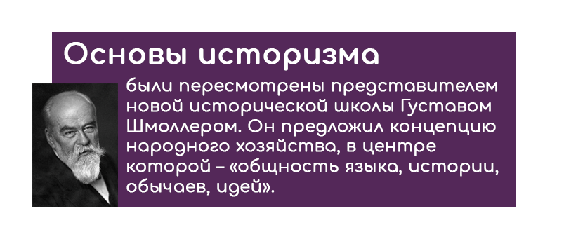
Густав ШмоллерОсновы историзма были пересмотрены главным представителем новой исторической школы Густавом Шмоллером (1838-1917). Г. Шмоллер предложил новую концепцию народного хозяйства, в центр которой ставил «общность языка, истории, обычаев, идей», которая глубже, чем что-либо другое связывает отдельные хозяйства. Г. Шмоллер делал особый акцент на роли хозяйственного «этоса» (греч. «ethos» - обычай, нрав), т.е. на моральных и правовых рамках, в которых функционирует экономика.
Карл Бюхер предложил свою периодизацию истории развития хозяйства. В качестве критерия периодизации он избрал длительность пути товара от его непосредственного производителя до конечного потребителя. Им были выделены следующие стадии развития:
- Замкнутое домашнее хозяйство. На этом этапе развития продукты потребляются там же, где произведены.
- Городское хозяйство. Здесь производитель и потребитель – уже разные субъекты, но на пути товара от одного субъекта к другому не возникает никаких посредников.
- Народное хозяйство. А вот на этой стадии такие посредники как раз и появляются. Производитель работает на точно неизвестный ему рынок; прежде, чем дойти до конечно потребителя, товар проходит через «руки» множества посредников. На этой, самой высшей стадии развития, большую роль играют финансовые рынки и учреждения.
Луйо Брентано известен своими исследованиями вопросов, касающихся труда и заработной платы. Он выдвинул идеи положительных аспектов высокого уровня заработной платы для экономики.
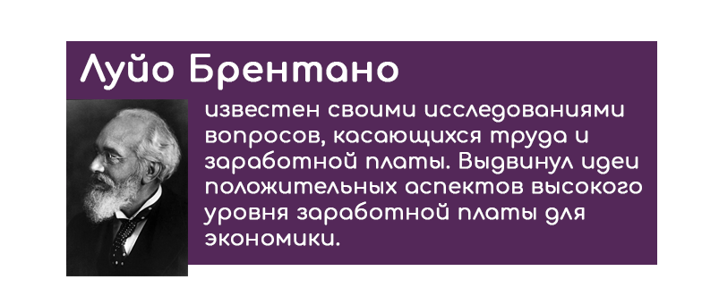
Во-первых, высокая заработная плата положительно влияет на стимулы к труду и. тем самым, способствует повышению производительности труда, а во вторых, стимулирует замену труда машинами, а следовательно, технический прогресс и все тот же рост производительности труда. Низкая же заработная плата, напротив, отбивает стимулы к трудосберегающему техническому прогрессу вследствие дешевизны труда.
В. Зомбарт. Капитализм, по мнению В. Зомбарта, создали, с одной стороны, такие добродетели буржуазного духа, как трудолюбие, умеренность, расчетливость, верность договору, а с другой стороны – воля к власти, стремление к «завоеванию для себя мира» и наслаждению «полнотой жизни», предприимчивость, вырвавшая людей из мира традиционных отношений, построенных на родственных и общинных связях.
Зомбарт выделил 6 основных типов капиталистических предпринимателей:
- Разбойники, особенно участники военных походов и заморских экспедиций ради добычи золота и экзотических товаров;
- Феодалы, коммерциализирующие свои земельные владения (продажа зерна, шерсти, горное дело);
- Государственные деятели, насаждающие торговые и промышленные компании;
- Спекулянты, оперирующие деньгами и ценными бумагами – ростовщики, банкиры, биржевые игроки, грюндеры (учредители акционерных обществ);
- Купцы, втирающиеся в доверие к лицам, которые облечены властью, и вкладывающие торговый капитал в процесс производства благ;
- Ремесленники – мастера и коммерсанты в одном лице.
В. Зомбарт выделил такие функции предпринимателя:
- Организационные (умение подбирать и объединять людей и вещи в работоспособное целое);
- Торговые (искусство вести переговоры, завоевывать доверие, возбуждать желание вести покупки своего товара);
- Счетоводные (точное числовое исчисление затрат и результатов).
М. Вебер. В своей пионерной работе «Протестантская этика и дух капитализма» (1904) М. Вебер связал генезис капитализма с радикальной сменой типа общественных связей.
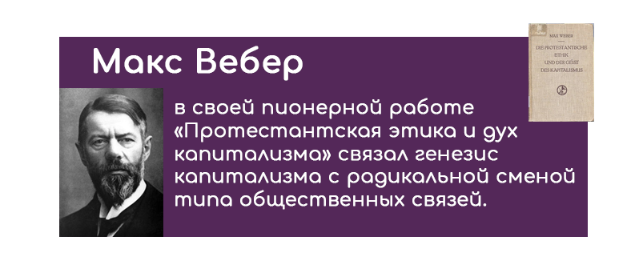
Он выделил два таких типа:
- «естественную общность» - общество, строящееся на основе общинных, родоплеменных и патерналистских отношений - т.е. традиционных связей - между людьми;
- «гражданское общество» - общество, строящееся на основе добровольного формирования связей между и людьми, свободными от давления общины или рода.
Маржинальная революция
Маржинальная (с фр. «дополнительный») – направление экономической теории конца Х1Х века, которое широко использует в анализе экономических процессов и законов предельные величины.
Маржинальная революция – это резкое изменение предмета исследований, которое произошло в экономической науке в 70-х гг. XX в., переход от конкуренции классической экономической школы к неоклассической теории.
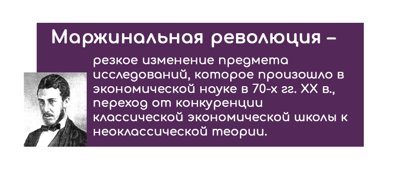
Хронологически маржиналистскую революцию принято связывать с выходом в свет трех книг:
- «Теория политической экономии» (У. Джевонс) – 1871 г.
- «Основания политической экономии» (К. Менгер) – 1871 г.
- «Элементы чистой политической экономии» (Л. Вальрас) – 1974 г.
Маржиналисты задачу экономической науки видели в поиске наиболее эффективных способов распределения ограниченных ресурсов и рационального хозяйствования, обеспечивающего максимизацию полезности.
В связи с этим появился и новый предмет:
- Изучение поведения отдельного потребителя, который в своей деятельности руководствуется только личным интересом, стремится максимизировать получаемую от потребления благ полезность в условиях и минимизировать затраты;
- Изучение поведения отдельной фирмы, стремящейся максимизировать свою прибыль.
Основные элементы маржинализма:
- Использование предельных величин как инструментов для анализа изменений экономически явлений.
- Субъективизм. Все экономические явления исследуются с точки зрения хозяйствующего субъекта.
- Методологический индивидуализм. Основой изучения является поведение отдельных хозяйствующих субъектов, из которого выводятся закономерности функционирования всего хозяйства в целом.
- Гедонизм - Человек рассматривался как рациональное существо, целью которого является максимизация собственного удовлетворения.
- Статичность.
- Ликвидация приоритета сферы производства
- Акцент на применении дедуктивных методов исследования в противоположность историзму и индукции.
- Восприятие рыночной экономики как равновесной системы.
Предшественники маржинализма. Задолго до основателей теории маржинализма А.Курно, Г.Госсен, Ж.Дюпон, И.Г.Тюнен изучали принципы и идеи этого направления экономической мысли.
А. О. Курно. Основная работа: «Исследование математических принципов теории богатства» (1838). А.О. Курно едва ли не первым ввел в экономическую теорию понятие функции спроса и обосновал закон спроса. Аргументом в этой функции была цена; при этом данная функция являлась непрерывной.
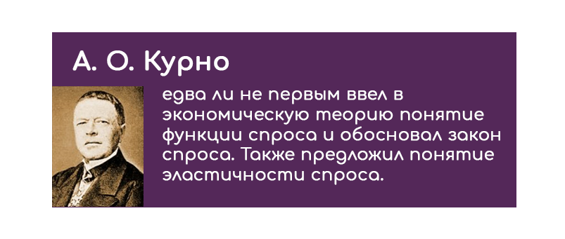
Продолжая анализ, А.О. Курно ввел понятия общей и предельной выручки, а также общих и предельных издержек. На основании этого А. О. Курно впервые осуществил выведение маржиналистского условия максимизации прибыли как равенства предельных издержек и выручки. Наконец, А. О. Курно заложил основы теории дуополии, что впоследствии получило название «модель Курно».
Ж. Дюпюи. Основная работа: «О мере полезности гражданских сооружений» (1844). Ж. Дюпюи известен тем, что впервые ввел в экономическую науку понятие излишка потребителя; правда у него он назывался «относительной полезностью».
Герман Генрих Госсен (1810-1858) – немецкий юрист, экономист. Его учение состоит в разработке основных математических принципов теории предельной полезности. В 1854 году Г.Госсен опубликовал книгу «Эволюция законов человеческого взаимодействия», в которой были сформированы законы широко применяемые и сегодня:
- Желаемость данного блага убывает по мере увеличения наличия данного блага;
- Рациональное потребление устанавливается при равенстве предельных полезностей совокупности потребляемых благ.
Австрийская школа. Основные элементы учения К. Менгера. Карл Менгер (1840-1921) – профессор кафедры политической экономии Венского университета. В 1871 году опубликовал книгу «Основание политической экономии».
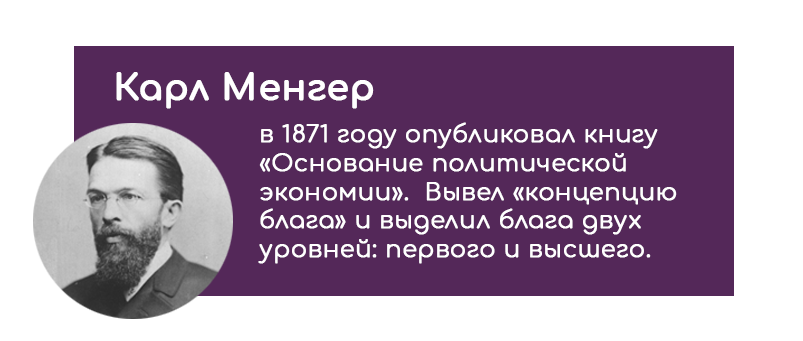
Концепция блага К.Менгер выделяет ряд условий превращения вещи в благо:
- Существование некоей человеческой потребности;
- Наличие у данной вещи потенциальных свойств, позволяющих ей удовлетворить эту потребность;
- Знание человеком указанных потенциальных свойств вещи;
- Обладание вещью, позволяющее использовать вышеперечисленные свойства.
К. Менгер выделял блага двух уровней:
- Блага первого порядка, непосредственно удовлетворяющие человеческие потребности.
- Блага высших порядков, которые служат для производства благ первого порядка и удовлетворяют человеческие потребности через блага первого порядка, то есть косвенно.
Экономические блага – блага, надобность в которых превышает их доступное количество. Прочие же блага, доступное количество которых превышает надобность в них, являются соответственно неэкономическими.
Концепция субъективной ценности. Субъективная ценность – это значение, которое имеет для индивида данное благо. Чрезвычайно важно то, что ценность не является объективным свойством вещи. Ценность - это суждение индивида о благе. Поэтому одно и то же благо может обладать разной ценностью для разных индивидов.
Необходимыми условиями для обладания благом ценности являются следующие:
- Его полезность для данного индивида;
- Редкость.
Ойген фон Бем-Баверк (Эйген Бом-Баверк). Основные работы: «Основы теории ценности хозяйственных благ» (1886); «Позитивная теория капитала» (1889). Многие теоретические аспекты, только намеченные К. Менгером, были развиты его учеником О. фон Бем-Баверком, известным, помимо всего прочего, своей жесткой критикой теории К. Маркса.
Теория рыночной цены блага Торг на рынке начинается с минимально возможной цены спроса. Затем эта цена поднимается, и по мере ее роста с рынка уходит часть покупателей. Равновесная рыночная цена устанавливается тогда, когда число покупателей, чьи индивидуальные цены спроса выше этой цены, совпадает с числом продавцов, чьи индивидуальные цены предложения ниже этой цены.
По мнению О. фон Бем-Баверка, невозможно точно определить значение равновесной рыночной цены; можно лишь выявить границы диапазона ее колебаний. Эти границы лимитированы двумя факторами:
- Субъективной ценностью «предельной пары сверху»;
- Субъективной ценностью «предельной пары снизу».
Предельная пара сверху - это слабейший из вступивших в сделку покупателей и сильнейший из ушедших с рынка продавцов. Предельная пара снизу - это сильнейший из ушедших с рынка покупателей и слабейший из вступивших в сделку продавцов. Итак, именно их оценки и формируют границы указанного диапазона.
Теория капитала и процента. Наибольший вклад О. фон Бем-Баверка в экономическую науку был сделан в рамках его теории капитала и процента. С точки зрения Бем-Баверка, существует только два элементарных фактора производства – земля и труд. Капитал – это производный (вторичный) фактор производства, который только связывает между собой исходные факторы производства. То есть, капитал, по О. фон Бем-Баверку – это те средства, которые позволяют применять «окольные» или «многоступенчатые» методы производства.
С капиталом тесно связано понятие процента. Согласно Бем-Баверку, «процент – это всякий доход, составляющий вознаграждение капитала». Он указал на три причины ее положительности:
- Люди ожидают в будущем увеличения дохода.
- Люди склонны недооценивать будущие потребности.
- Из теории капитала О. фон Бем-Баверка известно, что окольные методы производства являются более производительными, чем «неокольные».
Фридрих фон Визер. Основные работы: «Естественная ценность» (1889); «Теория общественного хозяйства» (1914). Наиболее полно учение австрийской школы маржинализма оказалось представленным в работах Ф. фон Визера. Его научные заслуги заключаются прежде всего в систематизации и обобщении этого учения.
Теория альтернативных издержек. Визер обосновывает субъективную теорию издержек, которую он называет теорией издержек упущенных возможностей. При этом Визер рассматривал издержки только как неполученную субъективную полезность, не принимая во внимание реальных затрат факторов производства. Эта теория включает два положения.
- Ресурсы, предназначенные для производства, всегда ограничены и могут быть использованы в той или иной отрасли, то есть альтернативно.
- Согласно положениям австрийской школы производительные блага нужны не сами по себе, а для создания конечной продукции.
Леон Вальрас (1834-1910) швейцарский экономист, основатель лозанской школы, увлекся экономической теорией благодаря работам О.Труно.
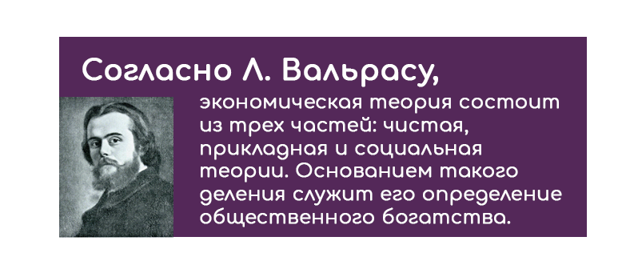
Согласно Л.Вальрасу, экономическая теория состоит из трех частей: чистая, прикладная и социальная теории. Основанием такого деления служит его определение общественного богатства. Общественное богатство - совокупность материальных и нематериальных благ, которые являются редкими , т. е., с одной стороны, представляют для нас определенную полезность , а с другой стороны, количество их в нашем распоряжении ограниченно . Из ограниченности количества этих благ вытекают три следствия: эти блага суть объект присвоения; они являются объектом обмена; они есть предмет промышленного производства.
Отсюда можно выделить три главных экономических явления, или три главных аспекта общественного богатства: обмен (меновая ценность), производство (промышленность) и распределение (собственность).
Концепция кругооборота Л. Вальраса. Свой анализ Л.Вальрас начинает с классификации благ. Среди благ, составляющих общественное богатство, можно выделить капитальные и скоротечные блага.
В обществе существуют четыре класса: землевладельцы, работники, капиталисты и предприниматели. Первые три класса владеют капитальными благами. Функция предпринимателей состоит в том, чтобы объединять различные капитальные блага в разных сочетаниях с тем, чтобы с помощью их производительных услуг создавать новые блага в сельском хозяйстве, промышленности и торговле.
Первые используются более одного раза, тогда как вторые - только один раз. Капитальные блага состоят из земли, личных способностей и собственно капитала. Скоротечные блага делятся на предметы потребления и сырые материалы. Предметы потребления имеют непосредственную полезность, в то время как капитальные блага и сырье - косвенную.
Мы можем выделить два разных рынка: рынок услуг (ресурсов, капитальных благ) и рынок продуктов (конечных благ). На первом землевладельцы, работники и капиталисты продают предпринимателям свои производительные услуги. На втором предприниматели продают землевладельцам, работникам и капиталистам конечные блага.
Вильфредо Парето. Последователь Вальраса Вильфредо Парето (1848-1923) – экономист, профессор политической экономии Лозанского университета в 1906 году опубликовал «Курс политической экономии». Он рассматривал ряд состояний равновесия во времени, а также допускал варьирование коэффициентов производственной функции в зависимости от размеров выпуска продукции.
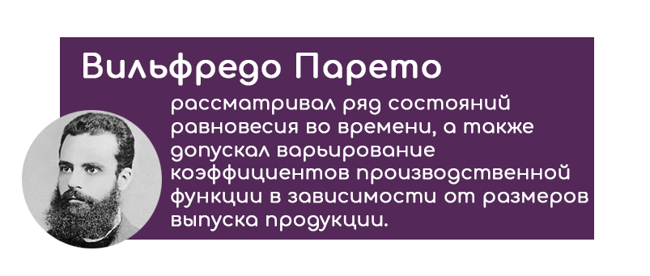
При использовании «кривых безразличия» Парето прогнозирует поведение покупателей на рынке, а с помощью графика отражает взаимосвязь товаров и из полезностей. Анализ «кривых безразличия» показывает, от какого количества одного товара способно отказаться домохозяйство, чтобы приобрести дополнительное количество другого товара.
Оптимум В.Парето – это такое состояние системы, при котором никакое перераспределение продуктов или ресурсов не может улучшить положение одного участника хозяйственного процесса, не ухудшая положения другого.
Закон распределения доходов Парето – неравенство в распределении доходов может быть уменьшено в том случае, если доход и производство будут возрастать быстрее численности населения.
Заслугой маржиналистов является обоснование совместного изучения спроса и предложения (на первом этапе изучались проблемы спроса, а классики отдавали приоритет проблемам производства).